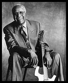

2000 |
зима |
|
 19 декабря 2000г. умер Попс Стэпплз, певец, гитарист, патриарх соул-музыки и блюза. Его долгая жизнь - это почти вся история блюза и исконный блюз пульсировал в его крови, что было жизненно важно для всей современной блюзовой сцены. Фразировка и ритм его музыки коренились в культуре Миссиссиппи начала века, и с его уходом обрывается еще одна их немногих остававшихся нитей, связующих наше время с изначальным блюзом... |
Интервью с участниками ХI эфесовского блюз-фестиваля в Москве:
Лонг-Джоном ХАНТЕРОМ;
Братьями ХОЛМС.
Альбом представлен в серии "Золото блюзовой фонотеки". Передача вышла в эфире "Эха Москвы" на Рождество 1998г. |
Обозор XI Эфесовского блюз-фестиваля.Юбилеи и новинки блюзовой звукозаписиБлюзовые чарты журнала BILLBOARD от 13 октябряСтарейший из ныне здравствующих блюзовых фестивалей состоялся уже в 28й раз в Сан-Франциско, в последний уик-энд сентября. Двухдневная программа была перенасыщена звездами и стилями. В ней были представлены и ветераны, и сливки современного блюза, и новички. Список звезд, вышедших на фестивальную сцену, говорит сам за себя: Johnny Otis, Koko "Queen of the Blues'' Taylor, Boozoo "Zydeco King'' Chavis, Shemekia Copeland, Keb' Mo', Elvin Bishop и Little Smokey Smothers (надевно выпустившие дуэтом альбом на Alligator), Joe Louis Walker, Alvin Youngblood Hart, Billy Branch, Старейшая из участников фестиваля75-летняя певица Alberta Adams сказала в интервью на фестивале: "И когда у меня ноги отнимутся, я буду продолжать петь блюз! Пока Бог не призовет меня…" |
Статья о Screamin' Jay HAWKINS, опубликованная в свежем номере журнала "Забриски Rider ". В этом же номере опубликован блюзовый словник, составленный ветераном моcковского блюза Доктором Агроновским. В недалеком будущем словник тоже появится на блюз-ру.
 |
Из архивов "Всего Этого Блюза": Блюз фирмы "Чесс" из цикла "Золото блюзовой фонотеки". Передача вышла в эфир в декабре 1998г. |
 |
Из архивов "Всего Этого Блюза": Джимми Текери в цикле "Золото блюзовой фонотеки". |

|
24 августа. |